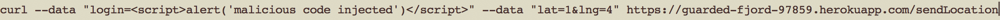
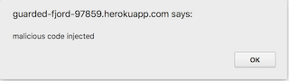
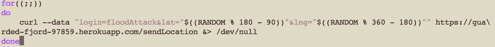

Security and Privacy Assessment of Client-Side and Server-Side
Introduction
This is a security assessment document for both the client-side and server-side of a Historic Landmark
web application. It will address, document and provide ideas for the resolution of these issues. The
application under review is a webpage that retrieves the current location of the user, sends it to a
database and then displays the locations of the people in the comp20 class along with all historic
landmarks within a one-mile radius on a map. There is also a second webpage which allows the user to view all logins in the database, sorted by time of login.
Methodology
In order to identify potential security issues in the program, I first observed client-side of the
application, and how the user interacts with the app. After this, I thoroughly inspected
the source code for both the client-side and server-side. After observing the POST and GET requests
to the server as well as their inputs, I fiddled with them using a series of request to the server
using curl, validating the results by looking at the documents in the mongo database as well as front-end browser results.
Abstract of Findings
This assessment identified several security and privacy issues that need to be addressed. The most important issue is that right now, this application is vulnerable to malicious code that will be presented to all users accessing the user logins page, and can steal private data from the user, or be a great nuisance. Other issues identified include a vulnerability that allows the perpetrator to fill the landmark map with logins and slow it down, a way to stop the correct functionality of the map by adding a number of out of range latitudes to the map as logins and finally a way to deplete the memory of the server.
Issues Found
Issue #1: Cross Site Scripting @/sendLocation Vulnerability
- Location: Page that displays past checkins (https://guarded-fjord-97859.herokuapp.com/). Code: index.js at the /sendLocation POST request (line 19).
- Severity: VERY HIGH. Affects all users viewing the page and can lead to malicious code being run on the victim's browser.
- Description: The mainpage for the guarded-fjord app displays all past checkins(lat, lng and time) as per the specifications of assignment #4. This information is therefore echoed to all users visiting the site. I inspected the code that handles user input for later insertion to the mongo database:

As seen above, the checkin inputs (request.body.login etc.) are taken directly from user input without any input validation(other than if they are not undefined), and are later added to the database and displayed on the webpage. Let's see what happens when a simple script is inserted as the login. This script is supposed to open a browser popup and display a message. I ran the following post request using curl:

Now, when you visit the checkin page with a browser this alert pops up:

As expected, the browser executes the script and the alert pops up to all users. This goes to show that the webpage is easily vulnerable to cross site scripting attacks. An attacker can embed scripts that can present fraudulent content, steal cookie information and create annoying popups as demonstrated above, which goes to show what a major security issue this is.
- Resolution: The ability for data to be interpreted as code needs to be removed for this issue to be resolved. In this /sendLocation POST request, injection can only be done on the "login" input as "lat" and "lng" are ran through the parseFloat() javascript method that returns NaN if input is not a number(ie a string).
My recommendation is to parse login input to encode angle brackets (ie. replace < with < and > with >), which will avoid input being executed by the browser.
- References: Cross-site scripting section on: comp20 security notes
Issue #2: Denial of Service style attack vulnerability
- Location: Issue is apparent in assignment #2 map page.
- Severity: Low. This attack burdens the functionality of the application but does not present a severe risk to the user.
- Description: Essentially, if you flood the database with post requests of checkins, the map that is supposed to display landmarks and all user logins, will be full of user logins and basically unusable. What I had in mind with this attack initially, was to fill the database and drastically slow down the webpage (this is explored in issue #3). To do this, a bash script that runs curl requests was used (see references):

This script performs continuous POST requests for random latitudes and longitudes. After running this script, here were the results:
Now imagine running this script for a while, or with multiple computers. The application will become unusable.
- Resolution: Uncertain. Maybe there is a way to restrict the number of post requests from the same source? I will have to look into that further.
- References: While playing around with an attempt to do a DOS attack with Kostas Tsiampouris, we wrote this bash script together and played around with it. We found it pretty interesting so I decided to add it as an issue. Also: More markers make map slower
Issue #3: Multiple curl request with arbitrary lat and lng (out of range)
- Location: Issue is apparent in assignment #2 map page.
- Severity: Medium-High. This attack stops the application from working as expected.
- Description: This issue is a continuation of issue #2. As seen in the bash script used in issue #2, the random numbers generated are then brought down to the limits of lat and lng (-90 to 90 etc). I was curious to see the behaviour of the landmark map, when out of range latitudes and longitudes are used. So I made a couple of POST requests manually with very large latitudes. Nothing Happened. I then modified the bash script to do multiple requests but without restricting latitudes to a specific range (didn't modify longitude range). It looked like this:
After running this script, here is the map:
There are no logins present (only landmarks), even though the logins are added to the database:
What is even more surprising, is that the previous logins (before the script was run) are also not rendered on the map. So, by running multiple POST /sendLocation requests with out of range latitudes, the application stops fully functioning.
- Resolution: Before adding the latitudes and longitudes to the database, it might be prudent to validate them and make sure they are withing range. A simple way to do this would be like so:

In the code above, the logins and latitudes are validated to make sure that they are present AND that they are within range. If not they are not added to the database and an error json object is returned.
- NOTE: I am not quite sure what is going on here, technically wise, but it presents an issue so I thought it should be included.
Issue #4: Server memory usage attack vulnerability
- Location: Global. Code: index.js at the /sendLocation POST request (line 19).
- Severity: Medium. This attack can increase heroku memory slug usage and make it reach its maximum (500mb). Subsequently, longer boot times will be caused.
- Description: While looking at the server side code and trying to find vulnerabilities, I noticed that there is no input validation on the login variable for the POST request (this is also why issue #1 is possible). The data from these requests is stored in the mongo database. So, theoretically, if you send multiple post requests (using bash script in issue #2 for example), with a login string that is really long, you can slow down functionality of a heroku app by depleting the memory capacity of the app.
- Resolution: Create an upper bound for the maximum number of characters of the login string.
Change this:
To this:
In other words, if the number of characters in the login string is greater than 12, the record is not inserted in the database and a JSON error message is returned. This recommendation will also reduce cross-site scripting vulnerabilities.
- References: POST request limit, Heroku Limits
Conclusion
This document addressed a couple of security/privacy issues found in this web application. It was mainly focused on cross site scripting and denial of service vulnerabilities. It is by no means a fullproof document on all the issues and vulnerabilities. Other privacy issues may still be apparent that are threatening. The main suggestion I have to make for further development of this application is that input validation be made more thorough, and that different cases for malicious inputs to be considered.
References
Separate references for each issue found at the end of each issue.